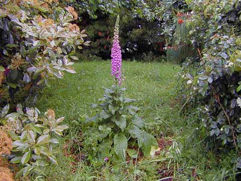

A glycoside is a molecule to which sugars are attached. They are commonly produced by plants. The terms “cardiac glycoside” and “digitalis” are used interchangably because these drugs were traditionally obtained from the foxglove Digitalis purpurea (digitoxin) or D. lanata (digoxin). D purpurea is a common weed in NZ and an occasional cause of poisoning (although much rarer than overdose by vets - it tastes disgusting).

Foxglove (Digitalis purpurea)
The cardiac glycosides are complex molecules present in a variety of plants, a number of which have been used therapeutically including digoxin (the only one available in NZ), digitoxin, oubain (which is probably the endogenous ligand) and lanatoside C. Other cardiac glycosides are usually only encountered as toxins: convallotoxin (from lily of the valley) and squill (from sea holly; previously used as rat poison).
They consist of a steroid nucleus with a lactone ring (responsible for activity) to which are attached three sugars (different with the different drugs) which influence solubility and binding.
positive inotrope
negative chronotrope
positive inotropic effect: Digitalis glycosides bind to the K+ binding site of the sodium pump. This inhibits Na+ being pumped out of the cell; the extra Na+ is exchanged for Ca++ resulting in an increased intracellular Ca++ concentration which increases contractility (see diagram). Numerous other mechanisms have been proposed but this is currently thought to be the main one.
negative chronotropic effects: Thought to be due to stimulation of central vagal nuclei and potentiation of the effects of acetylcholine in atrial myocardium and in AV conducting tissue. Together this results in an increase of vagal tone. In the atria this increased parasympathetic tone decreases atrial automaticity, depresses atrial conduction and increases the effective and functional refractory periods. At the AV node, increased parasympathetic tone decreases atrio-ventricular conduction slowing ventricular response to atrial fibrillation and flutter. The most pronounced ECG change therefore, is prolongation of the P-R interval (first degree heart block), although total heart block can occur.
congestive heart failure caused by dilated cardiomyopathy
supraventricular tachycardias especially atrial fibrillation or flutter
There are no large scale studies in dogs but in people, digitalis only benefits
a proportion (different in each trial) of patients in sinus rhythm with congestive
heart failure.
Absorption - may be decreased by food. Time to peak plasma concentrations
vary depending on the formulation and dose
Distribution - digoxin is approximately 20% bound to serum proteins
(species dependent) and the remainder is free in the serum. Digoxin is strongly
bound to skeletal muscle but is also distributed widely, with the highest concentration
in kidney, heart, intestine, liver and skeletal muscle. Lowest concentrations
are found in the plasma and brain. The half life in the dog varies between 14
- 56 hours, in the cat it is between 33 - 58 hours, ie plasma concentrations
take several days to stabilise.
Metabolism - approximately 15% is metabolised by the liver. (remember
there is decreased hepatic function in both right and left sided heart failure)
In some people, metabolism by gut bacteria is important, and antibiotic induced
changes in gut bacteria may lead to digoxin toxicity.
Elimination - the remaining 85% is excreted renally by glomerular filtration
and tubular secretion so be careful with patients in renal failure and adjust
the dose appropriately using therapeutic drug monitoring.
Severe heart disease will affect all aspects of pharmacokinetics - care is required!
Though this is rarely done, in life threatening supra-ventricular tachyarrhythmias
it is possible to rapidly "digitalise" a patient. This process risks
inducing serious ventricular arrhythmias, but may be life saving on rare occasions.
More usually, digoxin is administered at the maintenance dose rate, allowing
the animal to come to steady state over a period of several days. Maintenance
therapy doses are usually calculated on the basis of body surface area (see
pharmacokinetic notes).
Dosage with cardiac glycosides will vary considerably with the following factors:
•age: as older animals have less skeletal muscle and therefore less binding of drug. Glomerular filtration rate decreases with age and with decreased cardiac output
•obesity: as digoxin is not very lipid soluble, then dosage must be based on lean bodyweight. Conversely, digitoxin is lipid soluble so dosage is unchanged
•electrolyte imbalances: because these drugs compete with K+ for binding to the Na/K ATPase, in hypokalaemia the dose must be reduced and visa versa for hyperkalaemia (monitor serum electrolytes or look at T wave on the ECG). Dosage should also be reduced for hypernatraemia and hypercalcaemia. However, it is better to correct the underlying fluid/electrolyte imbalance first.
•concurrent drug administration
•myocardial failure: If the animal is in myocardial failure or is hypoxaemic they are more sensitive to digitalis.
Steady state peak and trough concentrations should be maintained between 1.0
- 2.5ng/ml (dog) and 0.9 - 2.0ng/ml (cat).
Mild toxicity is seen at concentrations of 2.5 - 6 ng/ml. Severe toxicity is seen at > 6 ng/ml.
digitalis intoxication
ventricular fibrillation
pericardial disease
(hypertrophic cardiomyopathy)
animals with renal failure or lung disease
Digitalis has a very low therapeutic ratio. Sudden calcium influx can cause
arrhthymias due to electrical instability in myocardial cells, so work up to
a steady state on a maintenance schedule and do not use loading doses.
Mild toxicity - anorexia, nausea, vomiting, and diarrhoea. Appropriate treatment is to withdraw digoxin for 24 hours, then give maintenance at 50 % of the initial dose for 12 hours. Use therapeutic drug monitoring to check.
Digoxin can be directly irritant to the gastric mucosa, causing vomiting. This
is worse with the tablet formulations, and can be difficult to clinically differentiate
from toxicity due to high plasma concentrations. Try using elixir formulations
if tablets are causing irritation.
Serious toxicity - increased excitability - ventricular ectopic beats, especially bigeminy, ventricular tachycardia. Give lignocaine or similar drug. (Antiarrhythmic drugs)
Atropine will help to block the increased vagal tone. Anti-arrhthymic drugs may be used: phenytoin or lignocaine are the drugs of choice. Procainamide or propanolol may also be useful. Digoxin antibodies (Digibind) which mop up the drug are available but difficult to obtain and extremely expensive.
Do not use quinidine or verapamil as they may increase serum digitalis concentrations. Frusemide decreases renal blood flow and blood volume, requiring a reduced dosage of glycosides due to slower elimination. Frusemide also causes an increased loss of K+, as do other diuretics (especilly , and thus potentiate digitalis. Drugs that induce or inhibit hepatic microsomal enzymes may also affect dose levels.
Digitoxin is not available in NZ. It is similar to digoxin but as it is primarily metabolised in the liver, could be useful in patients with renal insufficiency (instead of digoxin). It is 70 - 90% protein bound (cf. digoxin which is only 20% protein bound) and has a much shorter half life of between 8-12 hours in the dog. This means that it is possible to achieve therapeutic concentrations on a maintenance schedule in 24-36 hours and if toxicity occurs reduce it in 8-12 hours. This more rapid clearance is one of the reasons some cardiologists prefer this drug to digoxin. The half life in the cat is >100 hours and so do NOT use in this species. (It also has a long half life in man.)